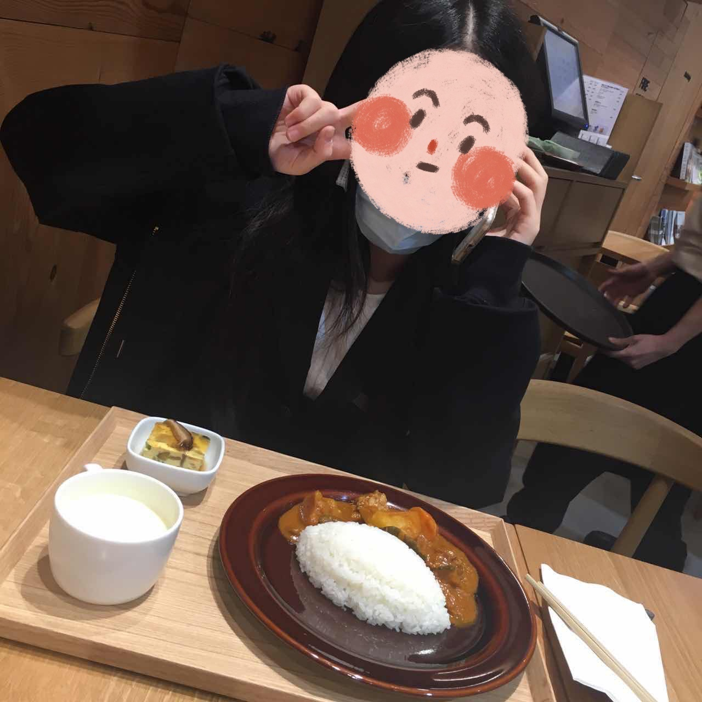
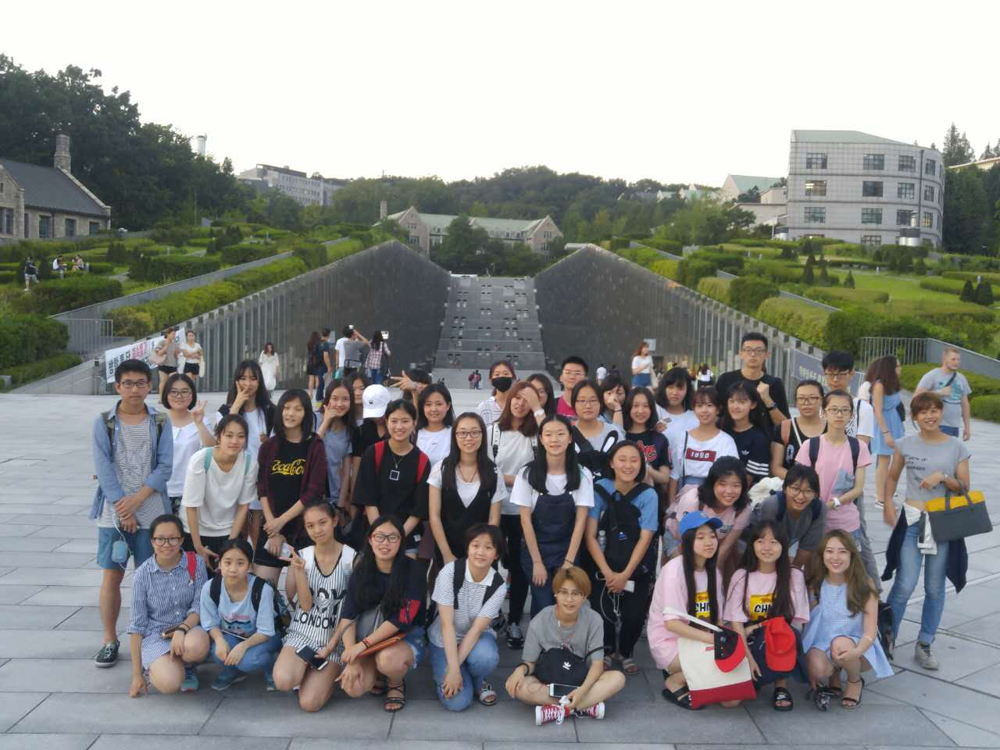
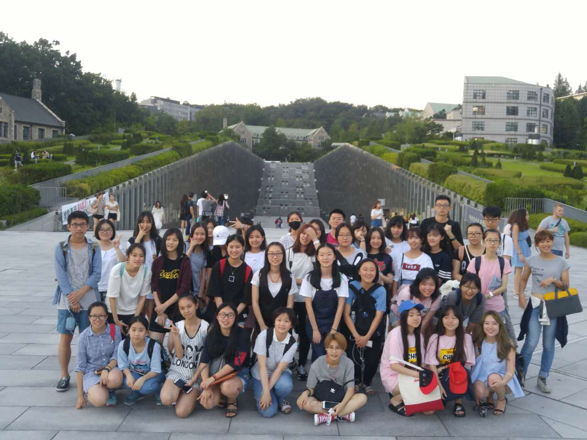

Lijia Gu
I am calm, down-to-earth and willing to work, strong sense of responsibility, conscientious and responsible, proactive, hardworking, used to bear pressure; innovative and proactive, with strong initiative and adaptability. Have a strong organizational ability and team spirit, with strong adaptability; strong discipline, work actively with; strong will, with a strong spirit of selfless dedication. Open and active thinking, strong ability to understand and accept new things, good mentality, self-confidence and self-discipline; open-minded and studious. Good at innovation, learning comprehension ability, good language communication ability and a certain writing skills. Warm and cheerful personality, friendly, honest and modest. Hardworking, responsible, hardworking, responsible and patient. Have affinity, approachable, good at communicating with people. During the University, he studied hard and seriously, and achieved excellent results. Excellent in both character and learning, won the scholarship for three consecutive years. Good affinity, obedience, cooperation, pragmatism, flexibility, skillfulness, good management knowledge and skills. Have strong innovative thinking ability, excellent project planning ability, scheme writing ability and copywriting performance ability; have strong communication ability, proposal ability, and be able to respond quickly according to customer requirements; proactive, patient and meticulous, efficiency oriented, willing to accept challenges, strong sense of responsibility, strong brand awareness, team awareness and service concept. I am very interested in camera and other imaging systems, especially the composition, working principle and design method of photoelectric part. Understand the history and current situation of video recording products for TV program production. Master the fundamentals of electronics, communication, color and video technology. Curious about color science, video technology and digital imaging system. Interest is motivation. Life and research. And I am easygoing, calm, innovative, independent thinking, strong adaptability, like the atmosphere of team unity and enthusiasm. I always believe that academic qualifications represent the past, financial resources represent the present, and learning ability represent the future. As long as I have clear goals, strong learning ability, positive and hard-working attitude, and a platform to display my talents, I will definitely create a future. Love film and Television planning work, has a very full entrepreneurial passion. In the two years of undergraduate training, strive to cooperate or independently complete the planning work, in which accumulated a lot of practical experience and some resources. In many TV drama shooting scene field study, in more than 20 drama groups with the group shooting, and with the back team to establish a very close relationship, and has a wide range of business relations in the industry. Last year, the film and Television planning for the first time for the company to provide personal planning and was adopted and got good results, also can unite their colleagues to work together to make excellent planning. I believe that only when you love your career can you do it well. I have always been very interested in film and Television planning. I have participated in film and television drama planning for many times since my middle school, and worked as the editor of school drama. Many years of professional theoretical study and work practice have enabled me to master better planning ability, keen observation, excellent oral expression ability and the ability to pay attention to and track social hot spots. I am well organized and willing to cooperate with others. I like reading, music and so on.
I have the ability to do advertising planning, advertising media planning, new media planning, video planning, brand planning, media planning for the company. Specifically, the company can do 1. of the company's tiktok, advertising, microfilm, product, voice, creative and plot planning, and shooting script creation. 2., good at operational planning and analysis of project needs, grasp the direction of planning, put forward creative film and Television planning copywriters, and plan content according to customer needs, brand or activity. 3. Creative ideas, copywriting and customer proposal writing 4. Responsible for the collection and understanding of project related information, and put forward effective content planning copy for the project. 5. Responsible for the planning, script writing, cooperation and follow-up of film and television projects and other related videos. 6. Participate in the creative work of the project or script, and write professional copy related to film and Television planning. 7. Complete all tasks assigned by the company. 8. Be responsible for the prophase planning of the film and television project, understand the project background and customer needs, collect and study the project data, analyze the project, and put forward the planning ideas. 9. Be responsible for the PPT arrangement of the film and television prophase design scheme, and carry out the in-depth design of the film and television script Keep effective communication with Party A, show and explain the project creativity, participate in the implementation of various stages of film and television, and ensure the smooth production of film and television programs. 11. The work direction includes but is not limited to: theme park, special films, science and technology exhibition hall, promotional film and other types of project planning and in-depth design. In terms of professional ability, I am familiar with professional creative methods, quick thinking, strong insight, solid copywriting skills and planning ability, strong language expression ability. And once independently planned the project case, has the film and television project signature. I am very familiar with the demand of film and television, advertising, shaking, Internet and other related film and television projects, and have fast learning ability, wide knowledge, and can skillfully use PPT and other office tiktok software. I can also independently write all kinds of PR articles (press release, review, comment, interview, etc.), which can ensure that all articles are persuasive, and have good self-reliance, self-confidence, responsibility and good communication and cooperation ability. Not only that, I also have the ability to write the company's project planning plan, advertising copy, press release, wechat release, microblog release, etc. And can be responsible for the company's website, wechat, microblog, mobile and other soft writing, with a certain degree of originality; responsible for the company's existing film and television pre planning, film and television scripts, project documents and materials preparation and narration, commentary writing, with the ability of material collection, refining summary: responsible for and control the whole creative process, efficient coordination of film and television production departments Work hard to ensure the correct direction of creativity and the achievement of goals. At the same time, he has good aesthetic ability, keen insight, planning ability to control complex content, efficient execution ability, excellent expression ability and market acumen, good conduct, honesty, good faith, good health, positive working attitude, diligent and serious work, strong sense of responsibility, able to do his own job, hospitality enthusiasm, strong sense of responsibility Strong sense of service, obedience to leadership, team spirit
My views on Planning: 1. Being able to write: writing is the most basic skill of activity planning. Copywriting, planning, and reporting are all kinds of styles that can express clearly and vividly. 2. Can calculate: basic calculation ability, activity evaluation index, budget, advertising expenditure and effect, result report and other data grasp. 3. Be able to observe: meticulous and accurate insight, make full use of the method of market research to make the activity strategy meet the market demand. 4. Organization: allocate the human and material resources that can be invested in the activities in an optimized way to ensure the smooth development of the activities. 5. Public relations: excellent public relations ability and appropriate public relations strategy can expand the influence of activities, such as media momentum. 6. Affordable: event planning is a delicate and difficult job. You have to be able to stay up late (even squeeze toothpaste) to write plans. When you are short of manpower, you have to be able to accept glorious tasks similar to porters at any time. Psychology and marketing are also indispensable basic knowledge. These abilities constitute the basic skills of activity planning. Put them into the specific work of an activity and disperse them in each work node, so "excellent ability" can make "excellent planning scheme". I think planning is not as difficult as imagined. A person with a gap in his mind doesn't need to write any planning book, but also knows how to do it. However, this does not mean that they are extraordinary and have the ability to "manage the world and the earth". They just have a reasonable estimate of the current situation, such as the task form, personnel allocation, resource status, situation purpose, what can be done and what can not be done, etc., and they are "confident" on the basis of this estimate. And planning not only appears in advertising and marketing, media publicity, but also exists everywhere in daily life. For example, chestnut, I want to eat KFC drumsticks, but it may conflict with what I am going to do. What should I do? Then I have to think, where is the nearest KFC store to me? How can I get there? Take a taxi or walk? How long will it take on the way? Is the time budget enough? If I need to be ranked, can I have time? The above is the logic of planning, OK, a series of ideas go in time, do not go in time, this is the implementation. So to sum up: planning = planning logic + planning execution + creativity. According to the above examples, we can also see that the planning is very close to us. The planning can be large or small, and the planning time can be long or short. Generally speaking, the planning includes several steps: first, the analysis of the planning object, then the time, content, etc. if it is an activity, the regional differences and the local actual situation should also be considered. Planning is the guiding ideology and specific strategy for you to implement something. And to consider the overall situation, such as an activity, preparatory, creative planning, implementation planning a series of processes. To put it bluntly, it is to do something to achieve a certain effect, set a goal and find a way to achieve it. Only in the field of marketing, creativity and communication are more needed.
Experience
Case Planning
• Special new insurance plan for a company in Hong Kong
• Give a speech and report the insurance plan
• Communicate and compete with other group's insurance plan
Film Production
• Taking famous buildings in South Korea as the background to shoot the story
• Share what you have learned about photography and Korean culture
Education
University of California Riverside
Portfolio




